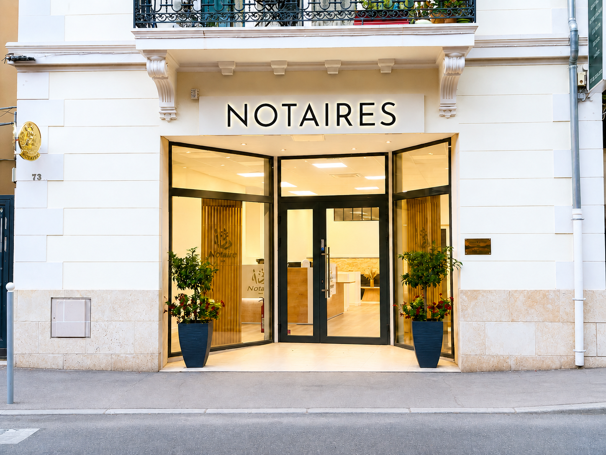

Proximité et accessibilité
Nous sommes à votre écoute, à Cagnes-sur-Mer et dans ses environs, pour vous accompagner dans toutes les étapes importantes de votre vie et de vos projets.
Office notarial de Cagnes-sur-Mer
Un accompagnement juridique exigeant, réactif et personnalisé pour vos projets immobiliers, familiaux, patrimoniaux et professionnels.
L'office
L’office notarial de Cagnes-sur-Mer a été créé à la suite du tirage au sort de Maître Jordan MOROZOF en qualité de notaire créateur en novembre 2025.
Dès sa création, l’office s’inscrit dans une démarche d’exigence et de qualité, avec une volonté affirmée d’être au plus proche de ses clients. Il accompagne les particuliers à chaque étape de leur vie, ainsi que les professionnels dans la réalisation et la sécurisation de leurs projets.

73 avenue de la Gare
L’office développe une approche globale et personnalisée, fondée sur l’écoute, la réactivité et la rigueur juridique, afin d’apporter des solutions adaptées à chaque situation.
Son activité s’inscrit également dans une logique de collaboration avec d’autres professionnels du droit, notamment en fiscalité, droit des affaires et droit de la famille.
En savoir plus sur l’étude →Nos valeurs
Nous sommes à votre écoute, à Cagnes-sur-Mer et dans ses environs, pour vous accompagner dans toutes les étapes importantes de votre vie et de vos projets.
Chaque dossier fait l’objet d’une attention particulière, avec une analyse rigoureuse et des solutions adaptées à votre situation.
Nous construisons avec vous une stratégie sur mesure, aussi bien pour vos projets immobiliers, familiaux, patrimoniaux que professionnels.
En tant qu’officiers publics investis par l’État, nous garantissons la sécurité juridique de vos actes et une confidentialité absolue.
Nous utilisons les outils numériques pour simplifier vos démarches, optimiser les délais et améliorer votre confort dans le traitement de vos dossiers.
Expertises
Vente, acquisition, avant-contrat, copropriété, urbanisme.
Opérations complexes, VEFA, division, sécurisation juridique.
Mariage, PACS, donation, succession, protection du conjoint.
Anticipation, organisation, fiscalité et stratégie familiale.
Création, cession, transmission, structuration professionnelle.
Garanties, prêts, sûretés et actes liés aux opérations bancaires.
« Écoute, rigueur et proximité : une vision moderne du notariat au service de chaque projet. »
Contact
📍Adresse
73 avenue de la Gare
06800 Cagnes-sur-Mer
☎Téléphone
04 15 54 13 53
✉E-mail
morozof.jordan@notaires.fr